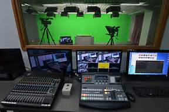
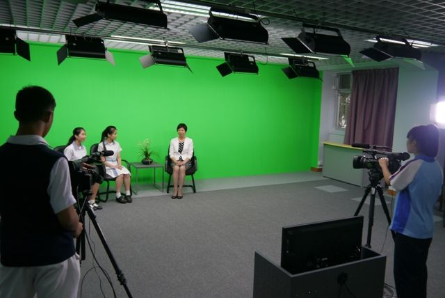
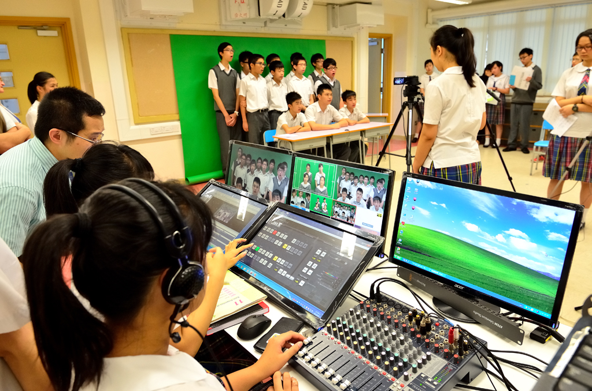
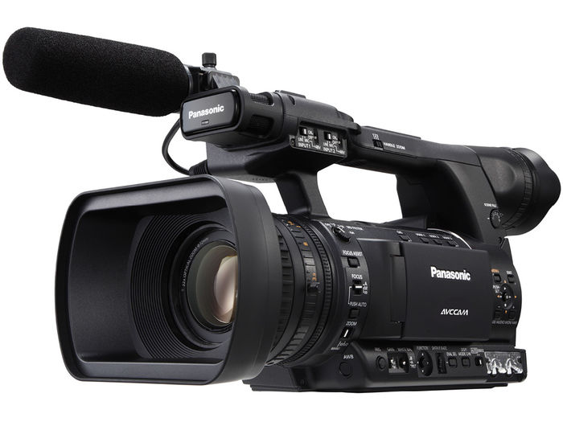

|  |
| 校園電視台於2008年正式成立。小組活動主要協助早會網上直播、老師專訪、嘉賓訪問，以及協助各小組製作宣傳短片，進行後期剪接工作、並上載至校園電視台網頁。五年間，本台已為錄影室添置更多的拍攝及燈光器材，引入更高的直播技術，提高畫面質素，亦令全校師生都樂於參與直播時段。而本台年度目標是「衝出校園，放眼世界」，透過開發學生的創意思維，更特設短片創作課程，學習短片製作，參加學界及全港性的攝影及錄像比賽，吸收經驗。本台亦會為同學製作資訊節目“Global Tube”，介紹全球資訊短片、音樂、電影，以至世界大事，同學從中可以放眼世界，亦能更了解節目製作的過程及當中的技巧。 |
|  |
|---|
| 開台至今，除了得到潘校長的大力支持，更重要的是一批積極主動的小組成員鼎力合作。我們深信校園電視台的工作的確是「任重而道遠」，我們將秉承「路漫漫而修遠兮，吾將上下而求索」的理念，在實踐過程中探究知識，讓組員從興趣中學習，藉此提高作品的製造水平。 |
|---|
|  |
|---|
高清數碼攝影機 作為校園電視台，應擁有三台以上常備 DV 級別以上的攝像機， 要求質量好，維修服務方便，重要指標要達廣播級性能。 |
視頻特技切換台 多機位拍攝所必需的設備，主要功能是對多台攝像機的視頻信號 進行現場切換。特技主要包括可選背景、劃像、淡進淡出、畫中 畫、摳像、靜止、油畫、頻閃、馬賽克等功能。 |
綠幕 用於去掉背景後製作特效 |